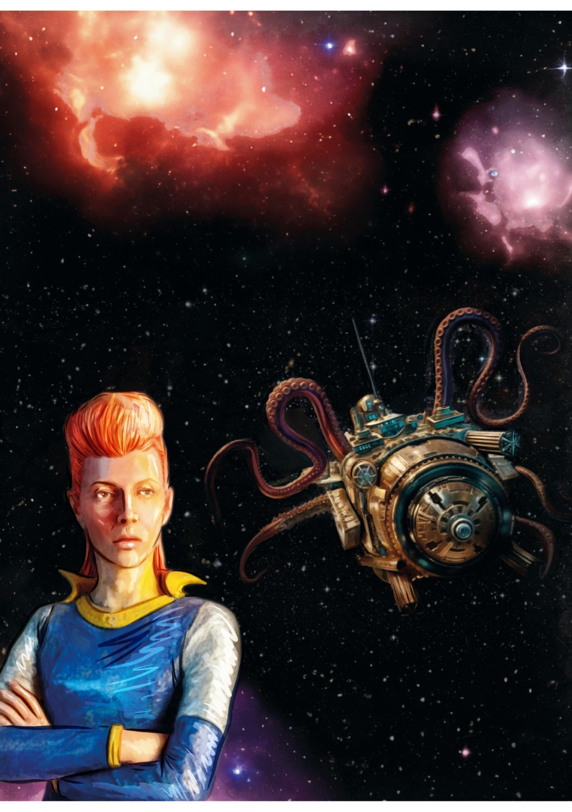
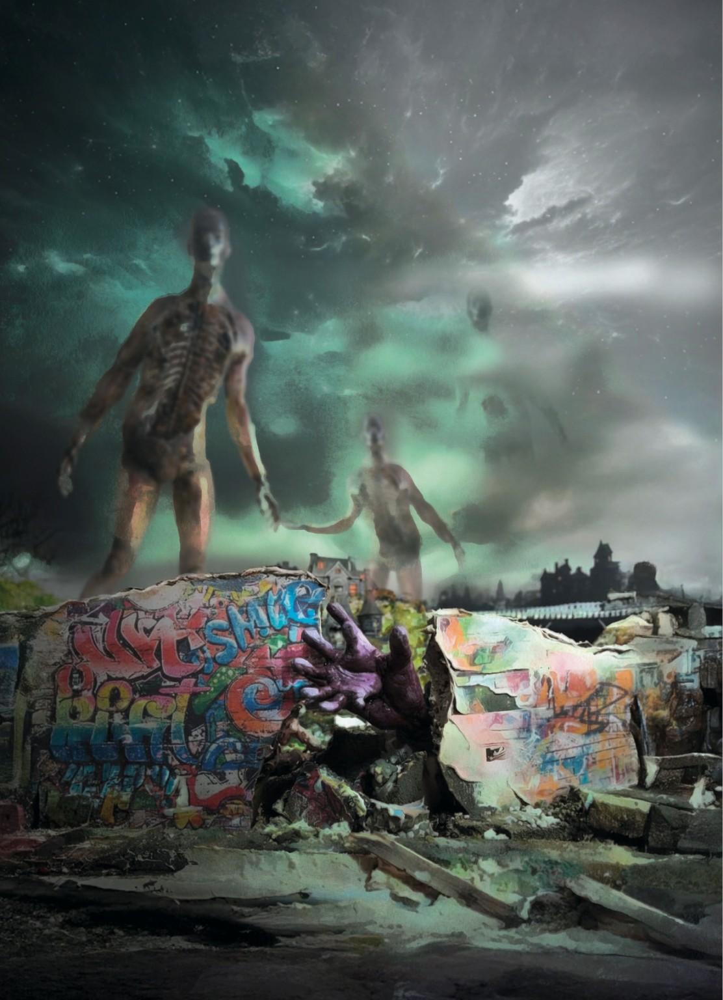
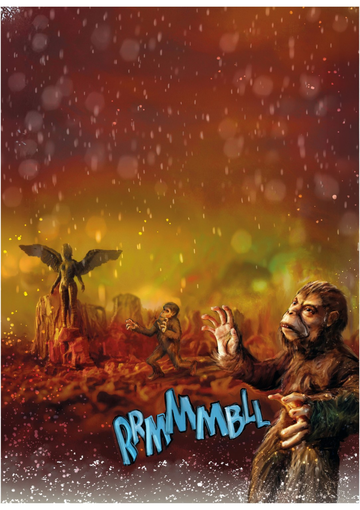
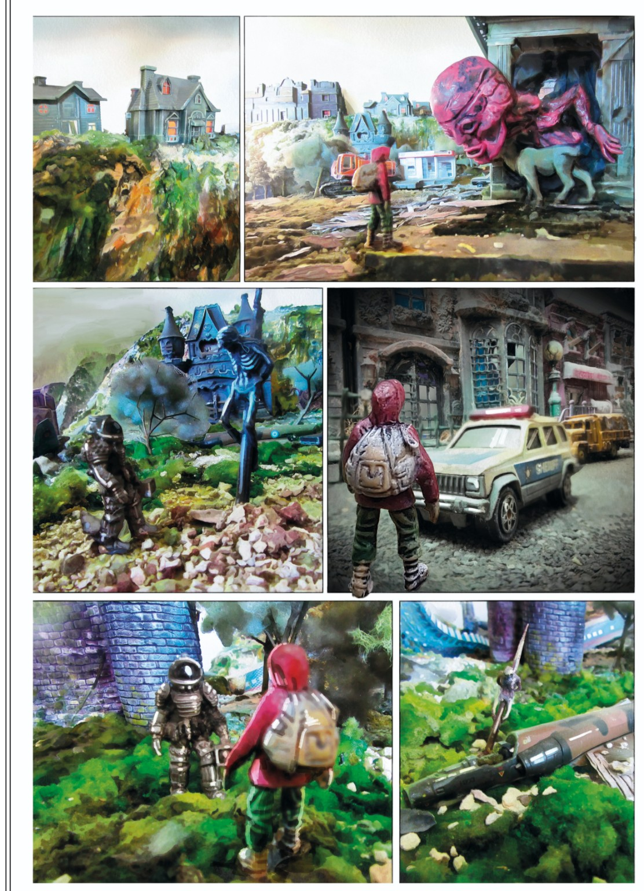
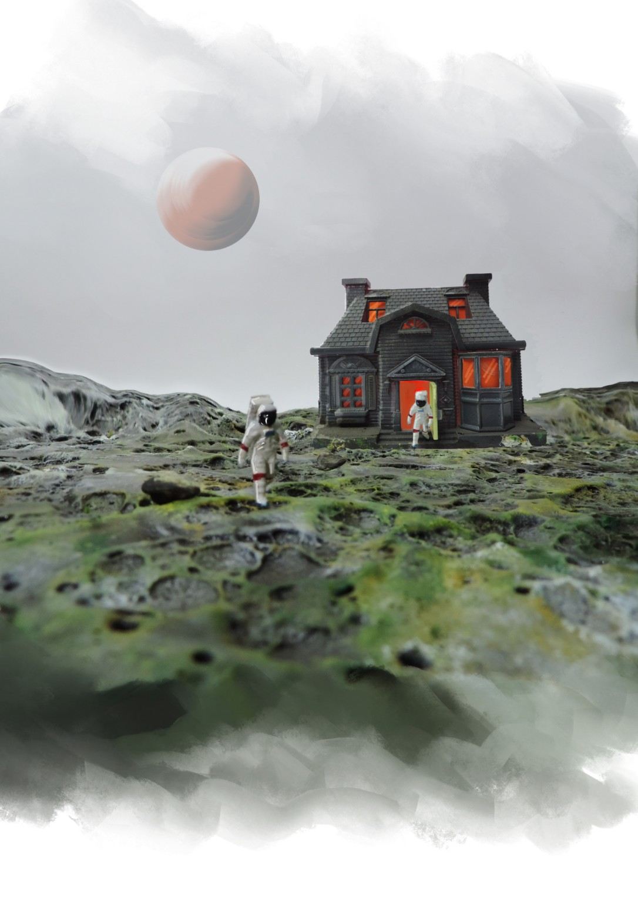

HORIZONTE TEMPORAL
Cuando las estrellas dejan de nacer, la materia comienza a recordar otras formas de vida.
UN VIAJE HACIA EL FINAL DE LAS POSIBILIDADES
El cosmos guarda
una última transformación.
Las galaxias se han vuelto silenciosas. Nadie recuerda cuándo nació la última estrella. En la Tierra, las señales de una transformación imposible comienzan a alterar la vida y la memoria.

EL MUNDO DESPUÉS DEL MUNDOLos siete capítulos
Siete umbrales de una misma historia. Selecciona un capítulo para recorrer sus imágenes y fragmentos narrativos.

«La materia había agotado sus combinaciones. Lo que llegó después no era muerte: era otra manera de existir».FRAGMENTO NARRATIVO PROVISIONAL
Un universo de ruinas
y revelaciones.
Fragmentos de otros mundos.
Selecciona una imagen para verla ampliada.
UNA OBRA EN TRANSFORMACIÓN
Entre la maqueta,
el dibujo y la memoria.
El universo visual de Horizonte Temporal se ha construido a lo largo de unos quince años a partir de ilustraciones, esculturas, maquetas, fotografías y composición digital.

ARCHIVO AUDIOVISUAL · DETRÁS DE LAS IMÁGENES
Noticias y novedades.
Ilustraciones, avances, lanzamientos y encuentros en torno a Horizonte Temporal.
EDICIÓN IMPRESA
Horizonte Temporal.
Próximamente: información sobre el lanzamiento y los puntos de venta.
PRÓXIMAMENTE
Contactar al autor.
ESCRIBIR POR CORREO ↗
HORIZONTE TEMPORAL
HORIZONTE TEMPORAL · UNIVERSO VISUAL EN DESARROLLO
VOLVER AL INICIO ↑